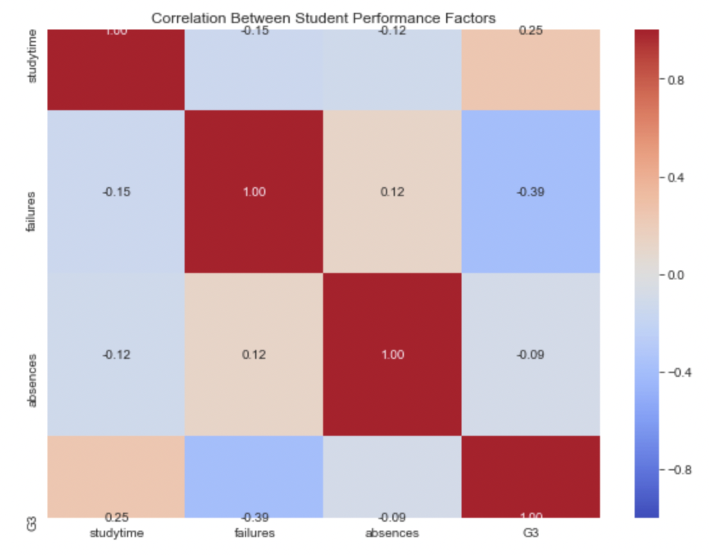

For this group project, we have prepared a prototype of an algorithm which aims to predict student performance based on multiple metrics found in this public dataset found on Kaggle.com.
This dataset contains 649 student records and 33 variables.
Preliminary correlation analysis points to the following three potential predictors:
Below is a general overview of the results:

Summary of Results:
Data quality: All 649 student records were processed successfully, with no missing values, invalid values, or duplicate
records detected by our cleaning checks.
Risk classification: The algorithm classified 367 students (56.5%) as Low Risk, 260 (40.1%) as Medium Risk, and 22 (3.4%) asHigh Risk.
Prediction accuracy: The algorithm achieved an overall binary pass/fail prediction accuracy of 84.90% using the final grade (G3) for evaluation.
Correctly identified failures: Of the 100 students who actually failed (G3 < 10), the algorithm correctly identified 12 asHigh Risk.
Missed failures: The algorithm failed to identify 88 of the 100 students who actually failed, indicating that the currentrisk-scoring rules need improvement.
False alarms: Ten students were classified as High Risk but actually passed, demonstrating that risk factors do not alwayslead to academic failure.
Main conclusion: Although the algorithm achieved relatively high overall accuracy, it identified only 12% of students whoactually failed. This suggests that accuracy alone is not sufficient to evaluate its effectiveness.
To see the source python code and the correcponding pseudo code for the algorithm used, please refer to the Code Page.